Guia de Git para Estudantes
Um guia básico e descontraído de git feito por uma estudante para outros estudantes!
Achou que faltou algo? Crie um novo issue!
1. Como usar o git?
É importante mencionar que não abordarei neste guia a parte de instalação/setup do git, e sim, o seu uso! Ah, nós também faremos uso do git via linha de comando e não via aplicativo desktop.
1.1 Afinal, para que serve o git?
O git é um sistema de versionamento de código. Mas o que significa isso? Bem, sabe quando você está fazendo um trabalho e começa a salvar como versão1, versão2, versãofinal, versãofinalfinalagoravai, etc? Então, é tipo isso, só que direito.
Com isso, você consegue:
- ter um controle muito bom de qualquer trabalho,
- acompanhar a evolução,
- ter a certeza de que pode voltar para uma parte do código que funciona caso você resolva fazer uma mudança que dê ruim (sem depender do ctrl + z)
- acesso ao código de vários computadores de forma facilitada
- controle melhor de trabalhos em grupo
Eu prometo que depois que você aprender a usar o git, você não vai conseguir entender como as pessoas viviam antes dele.
1.2 Como salvar o código no git? Também conhecido como commit
Primeiramente, o que é o commit? É mais ou menos o equivalente a salvar o seu código no git (não no seu computador). Existem algumas regras para fazer isso da maneira a aproveitar melhor essa feature, as quais serão explicadas ao longo deste capítulo, mas vamos começar pelo comando de como fazer isso.
Se seu código está pronto para o commit, dê o comando:
git statusIsso vai te mostrar se tem arquivos que foram modificados. Se você modificou o arquivo, ele deve aparecer em vermelho.
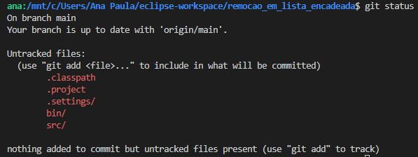Agora adicione o que quer "commitar". Para adicionar todos os arquivos modificados:
git add .Ou adicione somente um arquivo:
git add nome_do_arquivo.pyAgora faça novamente o comando git status e veja se os arquivos que você quer "commitar" ficaram verdinhos.
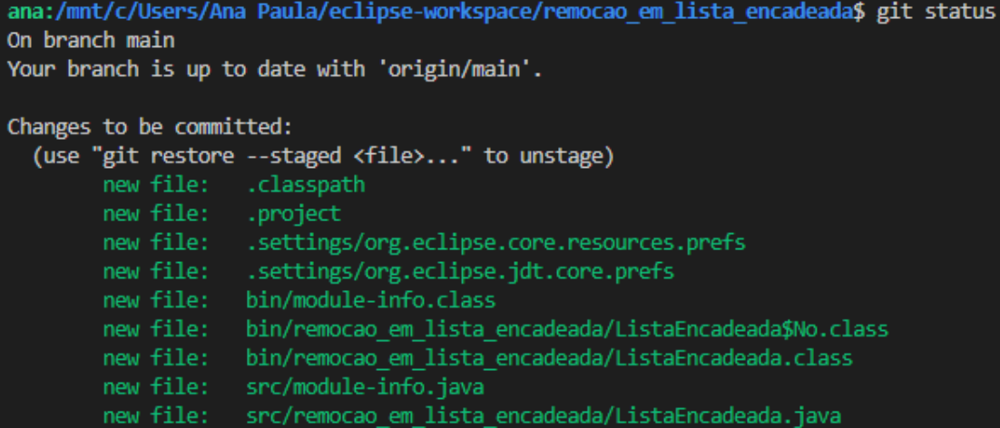Agora vamos fazer o commit propriamente dito.
git commit -m “Escreva aqui a mensagem do commit”Você já "commitou", mas se você abrir o GitHub, sua mudança ainda não está aparecendo. Para que ela apareça, é preciso fazer o push:
git pushAgora sim, seu código está no GitHub.
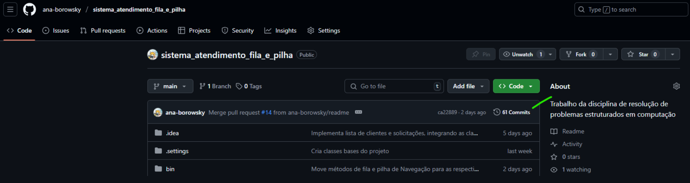1.3 Regras básicas de sobrevivência do commit
Para fazer o melhor aproveitamento do commit, existe uma série de dicas que facilitarão muito a sua vida.
1.3.1 A primeira e mais importante dica
Só faça commit de códigos que funcionem.
Assim, você consegue voltar para o último commit caso faça alguma alteração que quebre o código.
1.3.2 O que deve ter em um commit?
Para que um commit seja super legível, o ideal é que você faça somente uma coisa em cada um. Evite fazer um commit que implemente uma função, modifique a formatação e remova comentários ao mesmo tempo. É melhor criar um commit para cada uma dessas tarefas.
1.3.3 Padrões de mensagem de commit
Sempre comece a mensagem com a primeira letra em maiúsculo, no tempo verbal imperativo afirmativo. É como se fosse uma resposta à pergunta: "o que este commit faz?". As mensagens não devem ter ponto final.
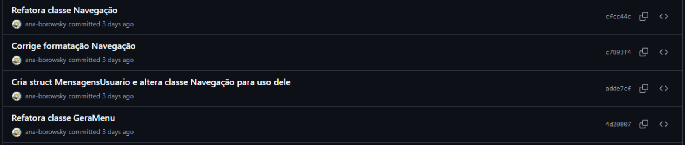Evite commits genéricos e imprecisos como "Faz pequenas alterações" ou "Arruma bugs".
Anti-exemplos (como não fazer):
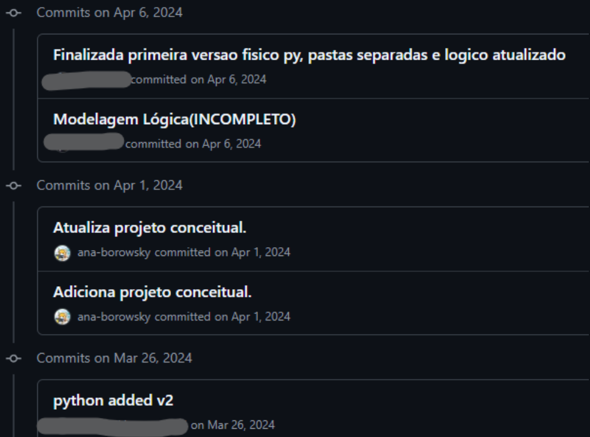1.4 Resumo padrões commit
- Só "commite" códigos que funcionem.
- Só mexa em uma coisa específica em cada commit.
- Dê nomes que digam exatamente o que você fez.
- Use sempre a mesma língua (português ou inglês).
- Primeira letra em maiúsculo e sem pontuação no final.
1.5 Resumo comandos commit
git add .
git commit -m "Cria função remover"
git push2. Uso de branches
Seus problemas com trabalhos em grupo acabaram! Com branches, várias pessoas podem trabalhar no mesmo projeto sem gerar confusão.
2.1 O que são branches?
Branches são derivações do código utilizadas, normalmente, para adicionar novas funções ao programa. Ao utilizar branches, vários programadores podem trabalhar em um mesmo código ao mesmo tempo, ficando mais simples de resolver conflitos.
Mesmo trabalhando sozinho, é uma prática recomendada. Você pode desenvolver uma nova funcionalidade em um branch separado, mantendo a main sempre estável e funcionando.
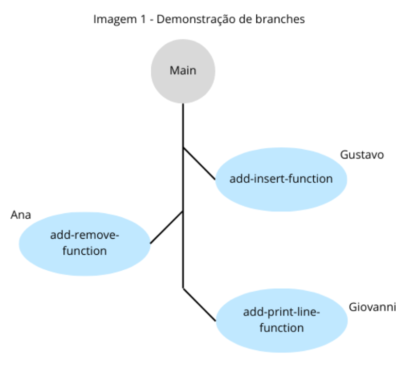2.2 Como criar branches?
Na linha de comando, digite:
git checkout -b nome-da-branchEste comando cria um novo branch e já troca para ele. O padrão para nomes de branches é ser tudo em minúsculo e com traços no lugar de espaços.
2.3 Como trocar de branches?
git checkout nome-da-branch2.4 Como saber em qual branch estou?
git status2.5 Como ver os branches no GitHub?
Entre no repositório, e embaixo do nome do repositório irá mostrar o nome do branch. Clique nele e em seguida em "view all branches".
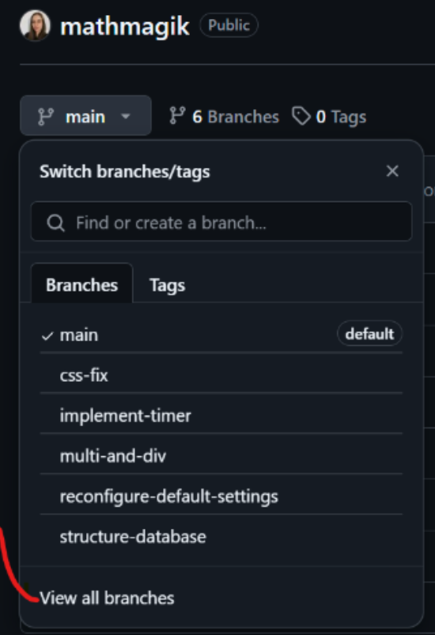2.6 Procedimento merge/pull request
Você termina a parte do código em que estava trabalhando, realiza os testes, verifica que tudo funciona direitinho. Então é hora de juntar a sua parte com a base do projeto (main).
- Primeiro: execute todos os passos do commit.
- Apenas na primeira vez que fizer o push, use:
git push --set-upstream origin nome-da-branch - Avise a todos os colegas de equipe que irá abrir um PR (pull request).
- Abra o GitHub no repositório do projeto e clique em “Compare & pull request”.
Ou entre no branch e faça por lá.
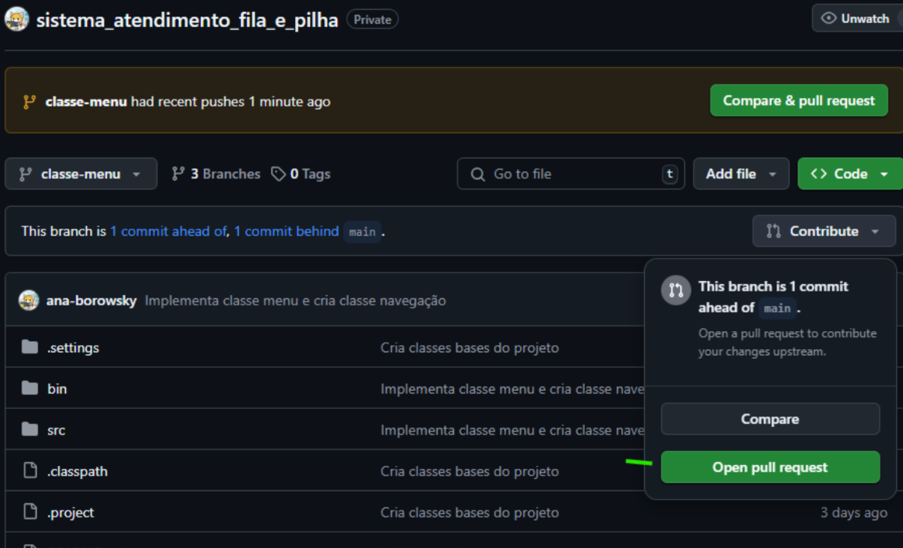- Preencha todos os campos do pull request de maneira clara.
- Peça para um colega revisar (ou aprove você mesmo).
- Após a aprovação, faça o "merge".
- Importante: Ao mergear um PR, seu branch main local não será automaticamente atualizado.
Após o PR ser "mergeado":
- Volte para o branch main:
- Atualize a sua main local:
- Delete o branch no GitHub. 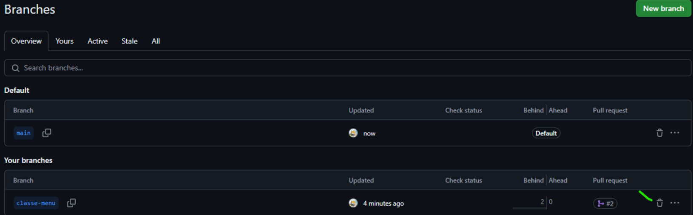
- Avise a todos da equipe para que todos façam pull na main.
git checkout maingit pull2.7 Comecei a alterar o código mas esqueci de criar um branch!
Não se preocupe! Use o comando:
git checkout -b nome-da-branchEste comando irá levar suas alterações para este novo branch.
2.8 Fiz push na Main!!
Isso pode causar diversos problemas, pois pula a verificação de conflitos do GitHub. É sempre importante verificar em qual branch você está com git status antes de começar a codar. É uma boa prática proteger o branch main contra pushes diretos nas configurações do repositório.
2.9 Procedimento rebase
Rebase faz exatamente o que o nome diz: troca a base. E o que é a base? É a main. Quando uma pessoa faz um merge na main, essa main não é automaticamente atualizada para todos.
No exemplo abaixo, os programadores estão trabalhando em partes independentes do código. Logo, não há necessidade de atualizarem as suas bases, é só cada um fazer um merge que dará tudo certo.
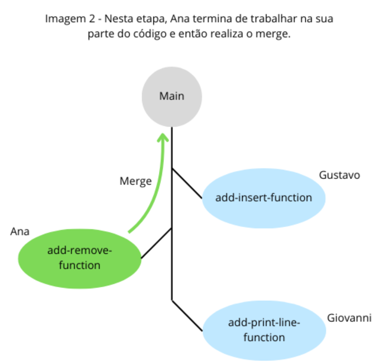É sempre bom saber que quando um membro da equipe faz um merge, a main é atualizada no GitHub, mas não nos computadores de cada membro, como mostra a imagem:
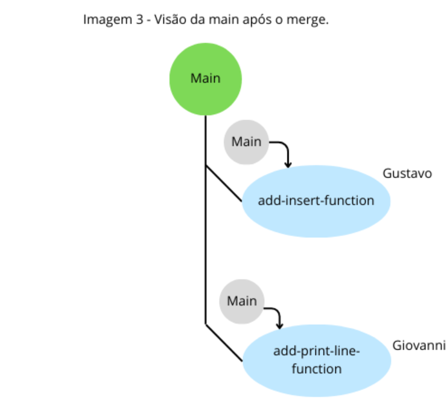Vamos dizer que Gustavo prefere saber como Ana fez sua função, então ele opta por fazer o rebase. Em sua branch ele dá o seguinte comando:
git rebase mainEsse comando irá trocar a main do branch pela atualizada. Após esse comando, podem aparecer conflitos. Resolva-os e depois dê o comando:
git rebase --continueOu, caso queira desistir do rebase, dê o comando:
git rebase --abortQuando for fazer o push, será necessário forçar:
git push --forceCuidado: O git rebase reescreve o histórico de commits. Por isso é necessário usar o push force. Em uma empresa, você vai demorar para ter permissão pra usar esse comando.
E assim ficou a visão de Gustavo da main após o rebase:
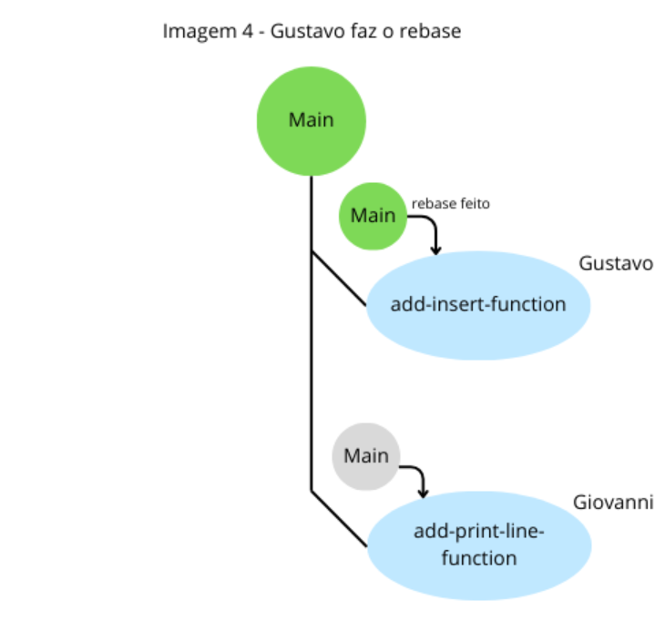2.10 Você pode entrar no branch dos amiguinhos
Se seu colega já tiver feito push no branch dele, basta você fazer os seguintes comandos caso queira entrar neste branch:
git checkout main
git pull
git checkout nome-do-branch-do-coleguinha2.11 Resumo comandos branch
git checkout -b nome-da-branch
# Coda, coda, coda mais um pouquinho
git add .
git commit -m "Adiciona função de imprimir"
git push
# Termina o objetivo do branch, e mergeia um pull request
git checkout main
git pull